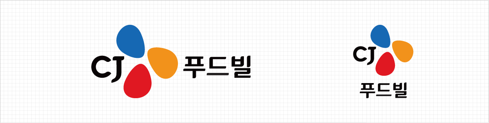
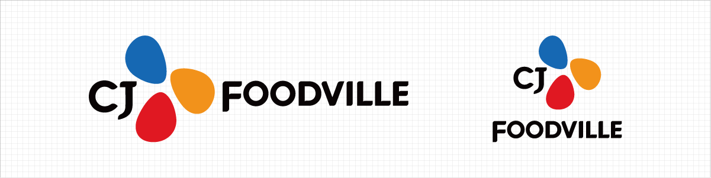

HOME > 스토리 > 이념 · 상징
이념 · 상징
CJ푸드빌이 추구하는 바와 상징하는 바를 알려드립니다.
기업이념
GLOBAL 기업으로 나아가기 위한 CJ푸드빌의 비전이 여러분의 새로운 문화가 되길 바랍니다.
비전
건강하고 즐거운 식문화를 만드는 GLOBAL F&B COMPANY
미션
ONLYONE적인 맛과 서비스로 일상의 즐거움을 창조한다
핵심가치
-
K
K-FOOD PRIDE
우리는 K-Food의 힘을 믿고
K-Food를 통해 세계인의 입맛을 사로 잡는다. -
F
FOOD INTEGRITY
정직한 맛과 서비스에 대한
우리의 신념을 무엇과도 타협하지 않는다. -
O
OPENNESS
우리의 목표를 이루기 위해
열린 생각과 소통을 바탕으로 협업한다. -
O
OUT OF THE BOX THINKING
우리는 창의적인 생각을 통해
외식의 Trend를 주도한다. -
D
DEDICATION
혼자만의 성공은 의미없다.
우리는 서로를 통해 성장하고 파트너, 지역사회, 국가와 함께 성장한다.
기업상징
CJ의 3가지 컬러는 건강, 편리, 즐거움을 의미하며
고객에게 언제나 새롭고 친근하게 다가가는 기업을 표현합니다.
-
CI컨셉
- 건강
- 자유롭고 편안한 CJ
- 보다 부드럽고 세련된, 고객에게 편안함을
느끼게 하는 기업이 되겠다는 것을 나타냅니다.
- 즐거움
- CJ의 비전을 담은 컬러
- 건강, 즐거움, 편리를 상징하며
이를 통해 더욱 풍요로워지는 고객의 생활문화를 상징합니다.
- 편리
- Blossoming CJ
- 세계시장과 고객을 향해 만개하는 꽃처럼
새롭게 피어나는 CJ를 상징합니다.
-
CJ 푸드빌 국문 CI
 -
CJ 푸드빌 영문 CI
